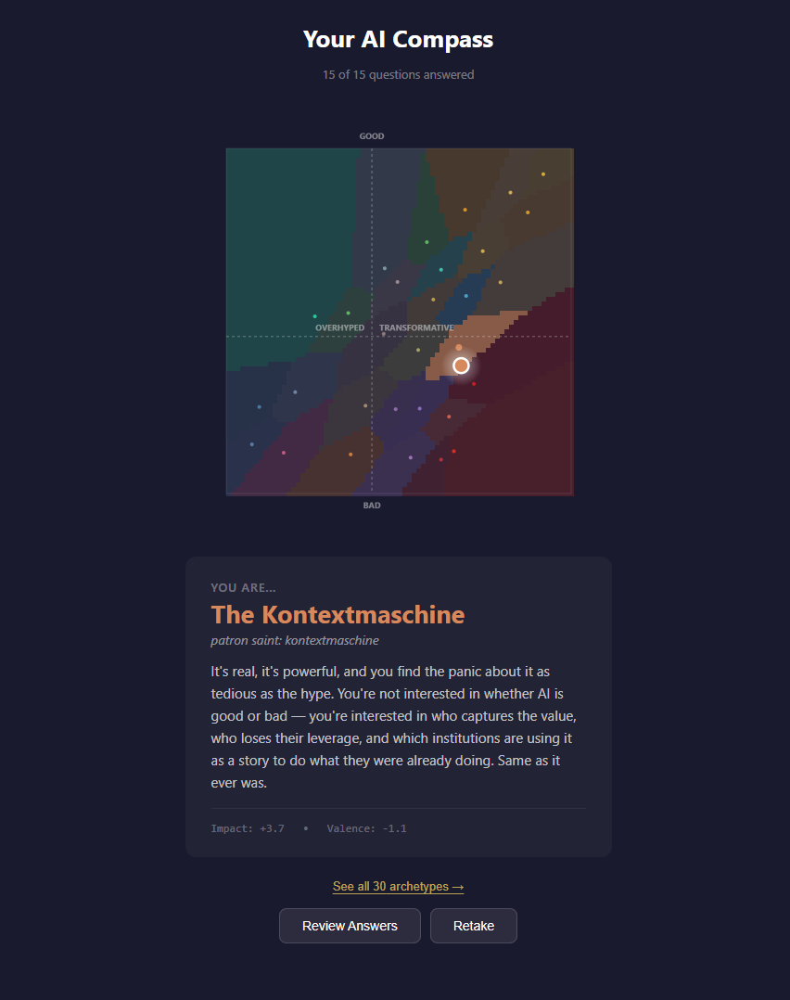

We should be confident in our beliefs, but never certain… (source)
Most people are other people. Their thoughts are someone else’s opinions, their lives a mimicry, their passions a quotation.
— Oscar Wilde
After a short list of questions, this appears to be my archetype regarding AI. Check yours.

If you cannot prove that every dollar of electricity you burn is generating a verified unit of intelligence, you are functionally bankrupt.
— Peter Diamandis
Nothing makes us safer and happier than ensuring the well-being of everyone.
— From Jens Oliver Meiert
Anything else I should try?
For thousands of years Greenland sharks have swum in silence, as above them the world has burned, rebuilt, burned again. […] I am glad not to be a Greenland shark; I don’t have enough thoughts to fill five hundred years. But I find the very idea of them hopeful. They will see us pass through our current spinning apocalypse, and the crash that will come after it, and they will see the currently unimagined things that will come after that: the transformations, revelations, the possible liberations. That is their beauty, and it’s breathtaking: they go on. These slow, odorous, half-blind creatures are perhaps the closest thing to eternal this planet has to offer.
— Katherine Rundell in Consider the Greenland Shark